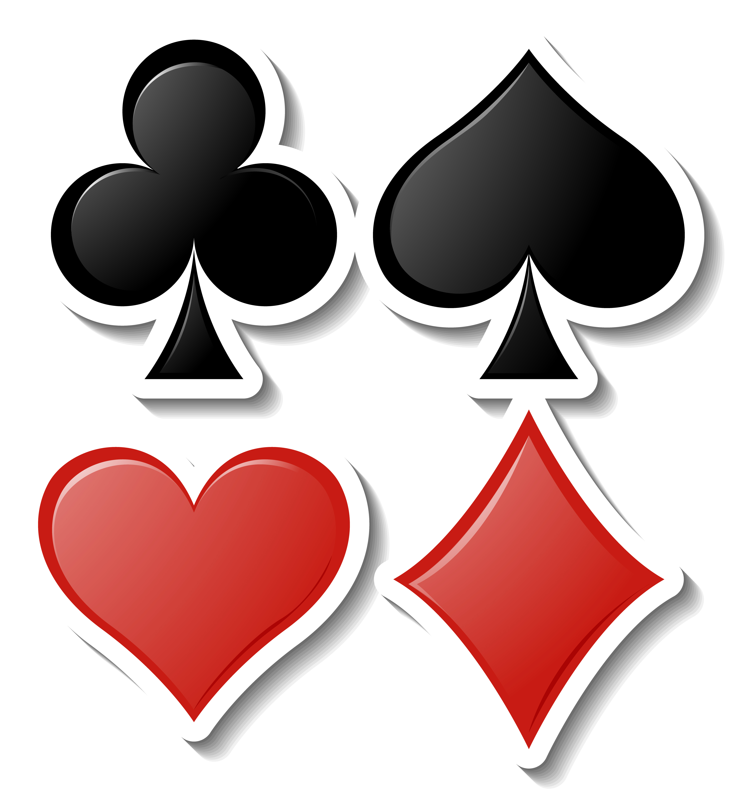

Actualización de expansión: "La Guerra de los Magos"
Se han añadido 20 nuevas cartas mágicas y una nueva facción: los Hechiceros del Viento.
Un juego de estrategia y magia donde los reinos luchan por el poder usando cartas místicas.
Reinos de Cartas es un juego por turnos donde cada jugador representa un reino. Las cartas tienen habilidades como ataque, defensa y hechizos mágicos. Gana quien conquiste todas las fortalezas enemigas.


Se han añadido 20 nuevas cartas mágicas y una nueva facción: los Hechiceros del Viento.
Aprende a combinar hechizos con unidades de asalto para dominar el campo de batalla.